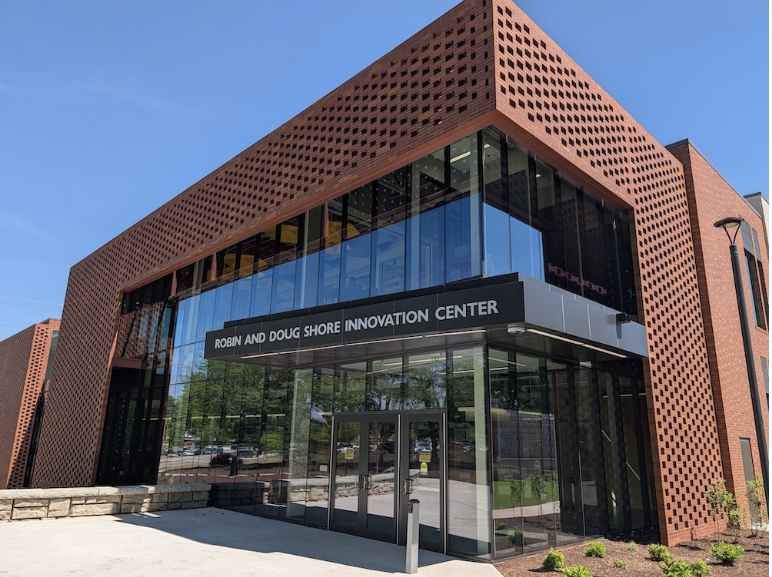

Welcome to the Innovation Center
The Robin and Doug Shore Innovation Center at Kennesaw State University supports innovation, collaboration, and interdisciplinary research. The center provides students, faculty, and industry partners with advanced spaces designed for learning and discovery.
The facility creates opportunities for technology development,
research collaboration, and hands-on student experiences.
It connects academic programs with real-world industry challenges.
Major Facilities
- Cleanroom research facilities
- Advanced computing laboratories
- Cybersecurity research spaces
- High-bay makerspace for innovation projects
Latest News and Announcements
- Innovation Center construction updates
- New student research opportunities
- Upcoming technology and innovation events